第九章 计算几何
向量运算、凸包、旋转卡壳、半平面交与多边形面积，误差控制往往比算法本身更关键。
什么是计算几何？
- 定义：用计算机程序处理几何对象（点、线、面、多边形、圆）与几何关系（相交、包含、距离、面积）的算法学科。
- 特点：浮点误差贯穿始终，几乎所有题都要处理精度；常数项多、代码量大、易写错。
- 核心工具：向量（点积、叉积）、极角排序、扫描线、凸包、半平面交、随机增量。
- 精度处理三板斧：
- 比较用
eps（fabs(a-b) < eps判相等，a < b - eps判严格小于）； - 尽量用整数/叉积避免除法；
- 能用
long double就先用，实在不行再整数化。 - 常见坑：
atan2的符号、除零、共线判定、边界点是否算“内部”。
const double eps = 1e-8;
int sgn(double x) { return x < -eps ? -1 : (x > eps ? 1 : 0); }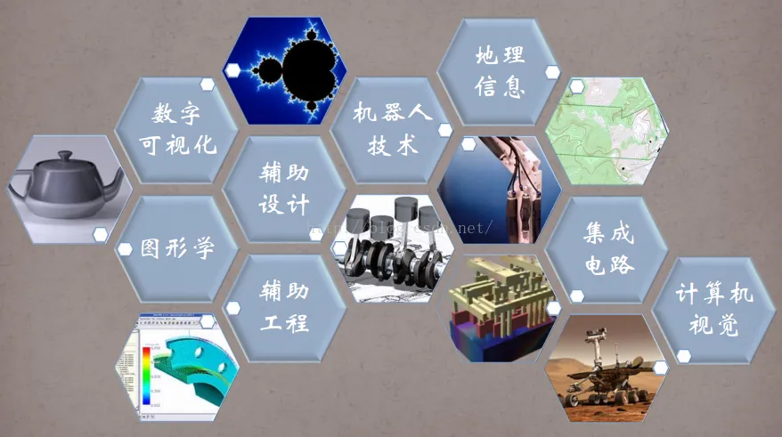
二维计算几何基础
- 点/向量：
struct Point { double x, y; }，点即起点在原点的向量。 - 基本运算：加减、数乘、模长
|a|、点积a·b = ax*bx + ay*by、叉积a×b = ax*by - ay*bx（有符号面积）。 - 点积含义：
a·b = |a||b|cosθ，用于求夹角、判垂直（a·b == 0）、求投影。 - 叉积含义：
a×b > 0表示 b 在 a 的逆时针方向；判三点转向（左转/右转/共线）。 - 常用几何量：
- 两点距离
|a-b|； - 线段（点）到直线距离
|cross(v, p-a)| / |v|； - 点到线段距离：投影落在线段内取垂距，否则取端点距离；
- 三角形面积
|cross(b-a, c-a)| / 2； - 多边形面积：
0.5·|Σ cross(p_i, p_{i+1})|（鞋带公式，顶点按顺/逆时针排列）。 - 相交判定：
- 线段相交（跨立实验）：
cross(a,b,p)·cross(a,b,q) < 0且cross(p,q,a)·cross(p,q,b) < 0；需特判端点共线/重合； - 直线交点：用参数方程或叉积比例。
double cross(Point a, Point b) { return a.x * b.y - a.y * b.x; }
double cross(Point a, Point b, Point c) { return cross(b - a, c - a); } // 三点转向
bool onSeg(Point p, Point a, Point b) { // p 在线段 ab 上
return sgn(cross(a, b, p)) == 0 &&
sgn((p.x - a.x) * (p.x - b.x)) <= 0 && sgn((p.y - a.y) * (p.y - b.y)) <= 0;
}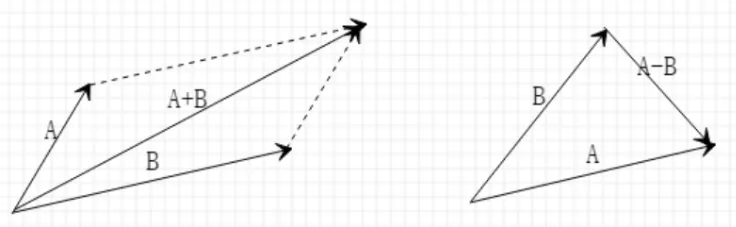
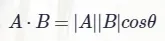
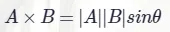
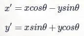
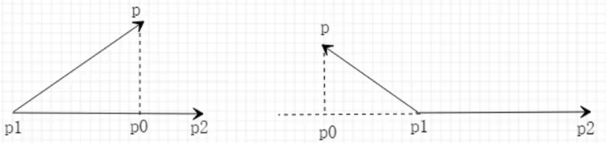
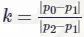
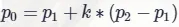
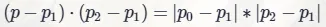
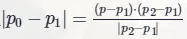
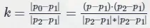
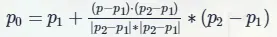
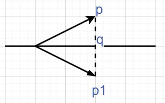
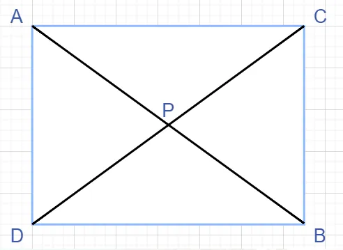
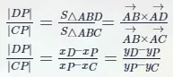
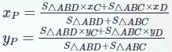
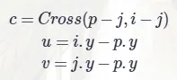
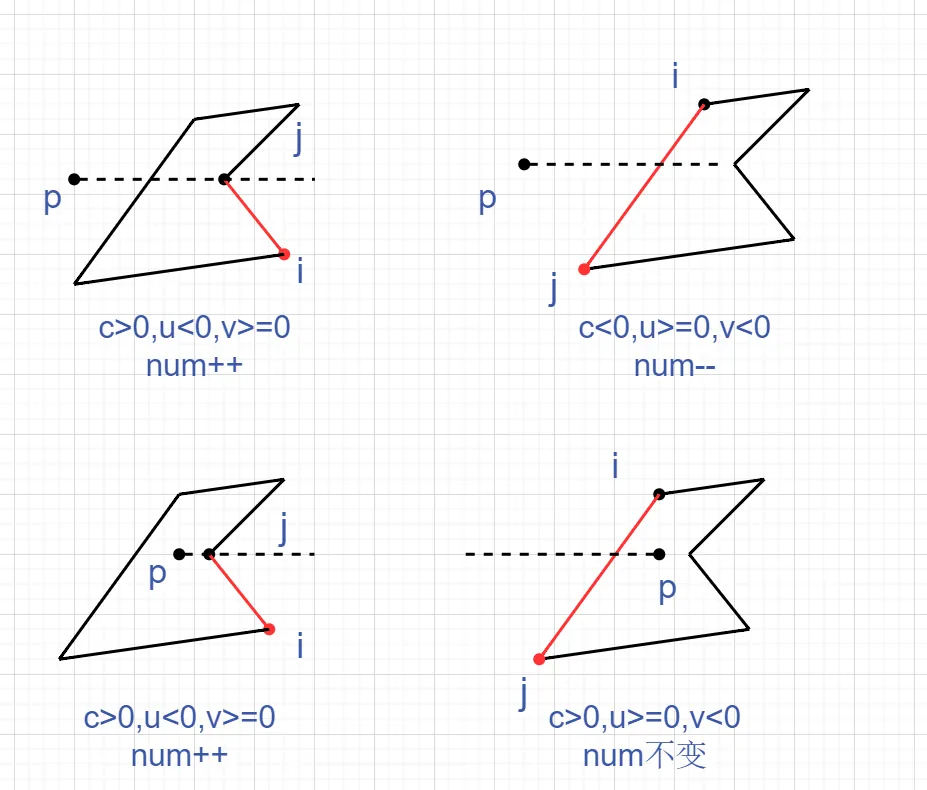
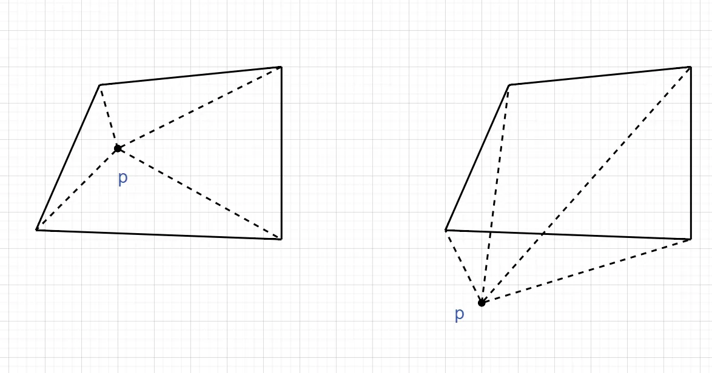
三维计算几何基础
- 表示：
struct Point3 { double x, y, z; }；运算与二维类似，多了 z 分量。 - 点积：
a·b = axbx + ayby + azbz（判垂直、求夹角）。 - 叉积：
a×b = (aybz - azby, azbx - axbz, axby - aybx)，结果是法向量，模长等于平行四边形面积。 - 混合积
(a×b)·c的符号表示 c 在 a×b 的哪一侧（判四点共面：混合积为 0）。 - 常用量：点到平面距离
|(p-p0)·n| / |n|；三角形面积|cross(b-a, c-a)|/2；四面体体积|(b-a)·((c-a)×(d-a))| / 6。 - 凸多面体表面积/体积、三维凸包（增量法 O(n²)）、三维旋转（罗德里格公式）。
- 竞赛中三维题远少于二维，多数三维题可投影到二维或转成向量运算。
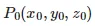
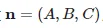
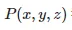
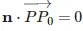
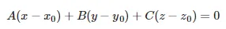
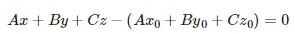
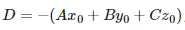
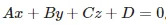
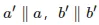
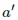
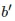
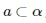
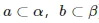
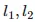
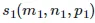
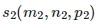
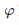
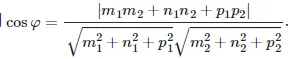
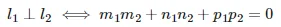
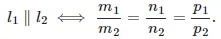
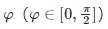
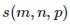
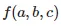
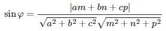

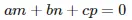
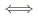
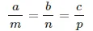
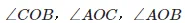
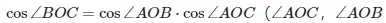
简述Pick定理
- 内容：顶点都在整数点上的简单多边形，面积
S = I + B/2 - 1，其中 I 为内部格点数、B 为边界格点数。 - 边界格点数：每条边
(dx, dy)上的格点数 =gcd(|dx|, |dy|)，累加各边（不重复计顶点）。 - 反推：已知面积与边界点可求内部点数
I = S - B/2 + 1；已知面积求总格点（面积 + 边界/2 + 1）。 - 用途：格点多边形计数、面积与格点互相换算、坐标范围大的计数题（无需枚举）。
- 注意：只适用于简单多边形且顶点为整点；自交多边形不适用。
double area = 0; long long B = 0;
for (int i = 0; i < n; ++i) {
int j = (i + 1) % n;
area += cross(p[i], p[j]); // 有符号面积的两倍
B += gcd(abs(p[i].x - p[j].x), abs(p[i].y - p[j].y));
}
double S = fabs(area) / 2;
long long I = (long long)(S - B / 2 + 1);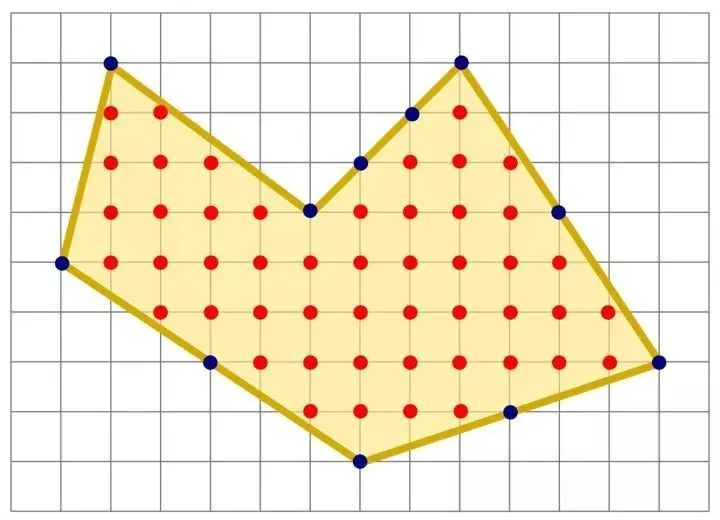
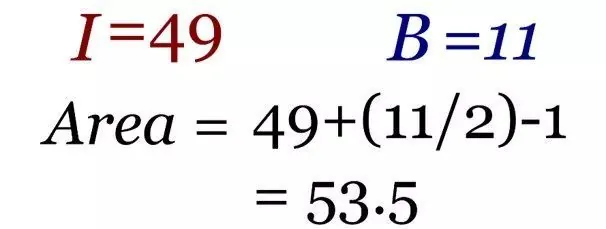
三角剖分的定义和应用
- 定义：把多边形（或点集）分解成若干互不重叠的三角形，且三角形顶点均为原顶点（不新增点则称“无 Steiner 点”的剖分）。
- 性质：n 边形无新增点的三角剖分恰有
n-2个三角形、n-3条对角线。 - 常见算法：耳切法 O(n²)（简单多边形）、Delaunay 三角剖分（最大化最小角，常用于点集）、扫描线 + 单调多边形。
- 应用：
- 多边形面积/重心计算（拆成三角形分别算）；
- 多边形内点判定（三角形剖分后逐个判）；
- 图形渲染、网格生成、地形建模；
- 计算几何中的“三角不等式”与 Voronoi 图的基础。
- 竞赛中多数“多边形”题用鞋带公式即可，三角剖分多用于点集/网格类问题。
什么是凸包？
- 定义：包含给定点集的最小凸多边形（或凸集）；直观上像“用橡皮筋把点拢起来”形成的边界。
- 常用算法（Andrew 单调链 / Graham 扫描）：
1. 按 x 再按 y 排序，去重； 2. 从左到右维护下凸壳（叉积 ≤ 0 则弹栈）； 3. 从右到左维护上凸壳，拼起来即凸包。
- 复杂度
O(n log n)（排序为主）。 - 用途：最远点对（旋转卡壳）、点集直径、凸多边形面积/周长、判断点是否在凸包内（二分）、最小包围矩形。
struct Point { double x, y; };
bool cmpXY(const Point &a, const Point &b) { // 先 x 后 y
return a.x != b.x ? a.x < b.x : a.y < b.y;
}
double cross(Point o, Point a, Point b) { // 三点转向
return (a.x - o.x) * (b.y - o.y) - (a.y - o.y) * (b.x - o.x);
}
int convexHull(Point *p, int n, Point *hull) { // 返回凸包点数（逆时针，首尾不重复）
sort(p, p + n, cmpXY);
n = unique(p, p + n, [](const Point &a, const Point &b) {
return fabs(a.x - b.x) < 1e-10 && fabs(a.y - b.y) < 1e-10; }) - p;
int k = 0;
for (int i = 0; i < n; ++i) {
while (k >= 2 && cross(hull[k - 2], hull[k - 1], p[i]) <= 1e-10) --k; // 允许共线则改 <= -1e-10
hull[k++] = p[i];
}
int t = k;
for (int i = n - 2; i >= 0; --i) {
while (k > t && cross(hull[k - 2], hull[k - 1], p[i]) <= 1e-10) --k;
hull[k++] = p[i];
}
return k - 1; // 最后一个点与起点重合
}- 注意：共线点是否保留会影响“凸包周长/面积”的计算，按题意决定
<= 0还是< 0。

简述旋转卡壳
- 定义：用一对“卡住凸包”的平行线绕凸包旋转，利用对踵点的单调性在线性时间内求出极值类几何量。
- 核心技巧：凸包上点的对踵点随顶点单调移动，因此枚举一条边时，只需从上一次的对踵点继续往后走，总 O(n)。
- 典型应用：
- 凸包直径（最远点对）：
max |p_i - q_i|； - 最小面积/周长外接矩形：矩形的一条边必与凸包的一条边共线；
- 凸包宽度、两凸包的最近/最远距离。
- 实现关键：面积比较用叉积（
cross(edge, next - p)），不要用距离（避免开方与精度问题）。
double diameter(vector<Point> &h) {
int n = h.size(), j = 1;
double ans = 0;
for (int i = 0; i < n; ++i) {
Point e = h[(i + 1) % n] - h[i];
while (cross(e, h[(j + 1) % n] - h[i]) > cross(e, h[j] - h[i])) j = (j + 1) % n;
ans = max({ans, dist(h[i], h[j]), dist(h[(i+1)%n], h[j])});
}
return ans;
}半平面交的定义和解法
- 半平面：直线一侧的区域，可表示为有向直线左侧（
cross(v, p - p0) >= 0）。 - 半平面交：多个半平面的公共部分，是一个凸多边形（可能为空/无界）。
- 解法（排序 + 双端队列，
O(n log n)）：
1. 每个半平面按极角排序，同角度的保留“更靠内”的那条； 2. 依次加入双端队列，若队首（或队尾）两条直线的交点在新直线外侧，则弹出； 3. 最后用队首直线再检查队尾，处理无界情况。
- 用途：线性规划可行域、多边形核（kernel）、凸多边形求交、可视化区域叠加。
- 常见坑：平行线处理、
eps选择、结果为空时的判定（点数 < 3）。
// 判定点 p 在有向直线 l 的左侧
bool onLeft(Line l, Point p) { return sgn(cross(l.v, p - l.p)) > 0; }
// 双端队列：q[head..tail]，弹头用 l[head] 与 l[head+1] 的交点判断


简述随机增量法
- 思想：把点随机打乱，逐个加入，每次用
O(n)检查当前解是否需要更新，靠随机顺序保证每个点成为“关键点”的期望次数为 O(1)。 - 经典应用：最小圆覆盖——维护当前最小覆盖圆，新点在圆外则“以它为边界点”重建，期望总复杂度
O(n)。 - 三层循环：枚举圆上两点/三点确定新圆，
O(n³)的暴力在随机顺序下期望退化到O(n)。 - 另一些应用：最小包围球、线性规划随机增量（Seidel 算法）、凸包随机增量。
- 关键前提：必须随机打乱，否则最坏会退化到
O(n³)。 - 实现要点：三点定圆（外心公式或垂直平分线交点）、退化情形（共线时取直径圆）。
// 最小圆覆盖（伪代码）
random_shuffle(p, p + n);
Circle c = {p[0], 0};
for (i = 1; i < n; ++i) if (!inside(c, p[i])) {
c = {p[i], 0};
for (j = 0; j < i; ++j) if (!inside(c, p[j])) {
c = {{(p[i]+p[j])/2}, dist(p[i], p[j]) / 2}; // 两点定圆
for (k = 0; k < j; ++k) if (!inside(c, p[k]))
c = circumCircle(p[i], p[j], p[k]); // 三点定圆
}
}反演变换的性质
- 定义：以 O 为反演中心、r 为反演半径，点 P 映射到射线 OP 上的 P'，满足
|OP|·|OP'| = r²。 - 基本性质：
- 反演是对合的（做两次回到原点）；
- 不过 O 的直线 ↔ 过 O 的圆；过 O 的圆 ↔ 不过 O 的直线；
- 不过 O 的圆 ↔ 不过 O 的圆（圆心不互相对应）；
- 保角性：反演保持两曲线的夹角（反向）。
- 用途：
- 把“圆与圆相切”问题转成“直线与圆相切”，简化构造；
- 求与多个圆相切的圆（阿波罗尼奥斯问题）；
- 把过定点的圆族问题转成直线族。
- 公式（以原点为心、半径 r）：
Point invert(Point p, double r) {
double d2 = p.x * p.x + p.y * p.y;
return {p.x * r * r / d2, p.y * r * r / d2};
}- 竞赛中属于冷门但优雅的工具，多用于“证明/构造”类几何题。